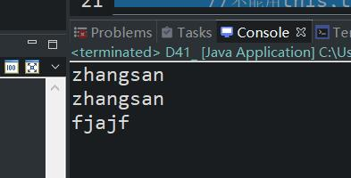

原文出处:本文由博客园博主心悦君兮君不知-睿提供。
原文连接:https://www.cnblogs.com/ruigege0000/p/11689607.html
原文连接:https://www.cnblogs.com/ruigege0000/p/11689607.html
一、this关键字
1.this在多数情况下都会省略
2.this不能用在含有static的方法之中。
3.static的方法的调用是不需要对象的，直接使用格式：类名.方法名；没有当前对象，自然不能访问当前对象的name。
package com.bjpowernode.java_learning;
public class D41_ {
String name2 = "fjajf";
public static void main(String[] args) {
String name1 = "zhangsan";
Customer2 c1 = new Customer2();
c1.name = name1;
Customer2.dosome(name1);
c1.dosome2();
//System.out.println(name2);编译报错，下面才是对的
D41_ d1 = new D41_();
System.out.println(d1.name2);
}
}
class Customer2{
String name;
public static void dosome(String name) {
System.out.println(name);//一开始写了this.name，导致编译错误，这是因为这是个静态方法，所以
//不能用this,this只可以用于对象调用的情况，也就是实例方法。
}
public void dosome2() {
System.out.println(this.name);//这种不带static的方法才是对象的方法。
}
}
4.在static方法之中不能直接访问实例变量和实例方法，因为实例方法和实例变量都是需要对象存在才可以，而static的方法之中，是没有this的，也就是说，当前对象是不存在的，自然也无法访问当前对象的变量和实例方法。
package com.bjpowernode.java_learning;
public class D41_this_keyword3 {
public void do1() {
System.out.println("youxiu");
}
public void do2() {
System.out.println("youxiu");
do1();//编译成功，因为do2调用就必须创建了对象，因此do1这个实例方法肯定能调用
}
}
三、源码：
D41_this_keyword2.java
D41_this_keyword3.java
地址：
https://github.com/ruigege66/Java/blob/master/D41_this_keyword2.java
https://github.com/ruigege66/Java/blob/master/D41_this_keyword3.java
2.CSDN：https://blog.csdn.net/weixin_44630050（心悦君兮君不知-睿）
3.博客园：https://www.cnblogs.com/ruigege0000/
4.欢迎关注微信公众号：傅里叶变换，个人公众号，仅用于学习交流，后台回复”礼包“，获取大数据学习资料